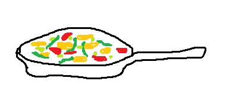

Home
Gnocchi Pan

Description
Gnocchi are similar to pasta, but they are actually made from potatoes.
This is a quick and easy dish for 2 portions.
Ingredients
- 500g gnocchi
- 200g cherry tomatoes
- 200g soy strips
- 3 tsp red pesto
- 2 tsp yeast flakes
- 250ml soy cuisine (which is a cream alternative)
- ~200ml soy milk
- 150g frozen peas
- 100g spinach
- canola oil, salt
Steps
- Stir-fry the gnocchi in a pan with canola oil until slightly crisp.
- Halve the cherry tomatoes.
- Add the tomatoes, soy strips, red pesto, yeast flakes, soy cuisine, and peas to the pan and stir.
- Add soy milk to achieve your desired consistency.
- Add the spinach on top and cook with a closed lid for 15min.
- Season with salt.